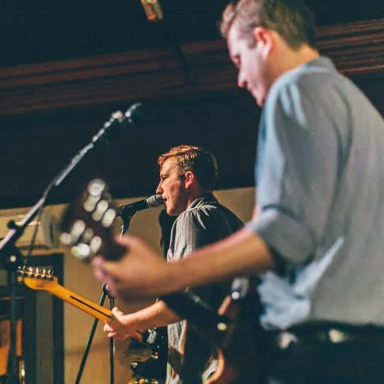
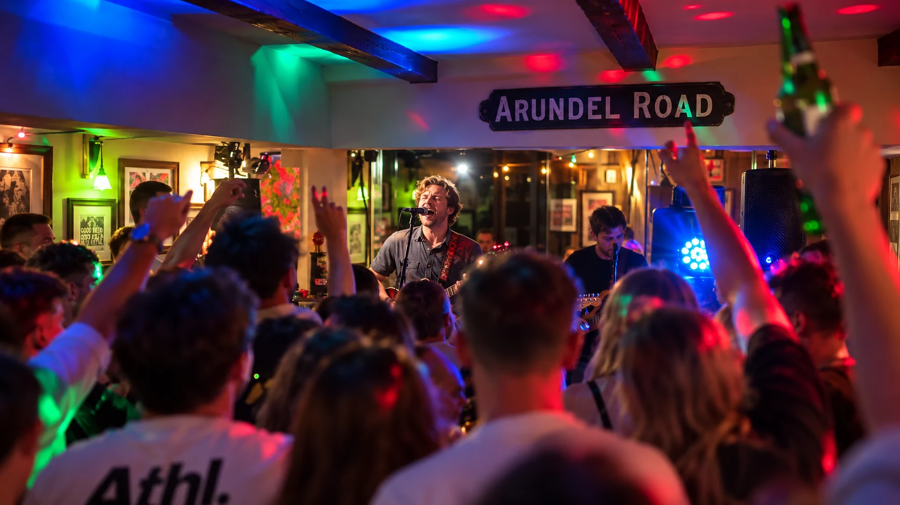
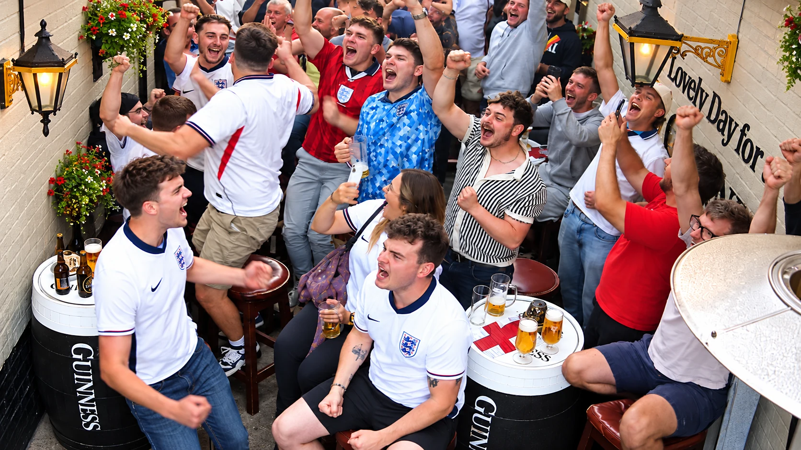

Live music & events in Billingshurst
Good nights.
Great company.
Music that gets you talking.
Occasions that bring you together.
There's always a reason to come back.

Live music
Your next
“one more song” night.
Bring your friends, find a spot and settle in for live music at The Kings Head. Our latest acts and performance times are announced on our social pages.
See gig announcementsKeep in the loop
From the pub.
The latest music nights, pub news and moments from the team.
Make it an occasion
Your people.
Your kind of party.
Birthdays, intimate wedding receptions, family celebrations and business meetings. Our private function space brings people together.
Talk to us about your guest numbers, food and the kind of gathering you have in mind. A set menu can be arranged on request.
Enquire about an event

Make a date of it.
For music nights, celebrations and everything in between, talk to the team.